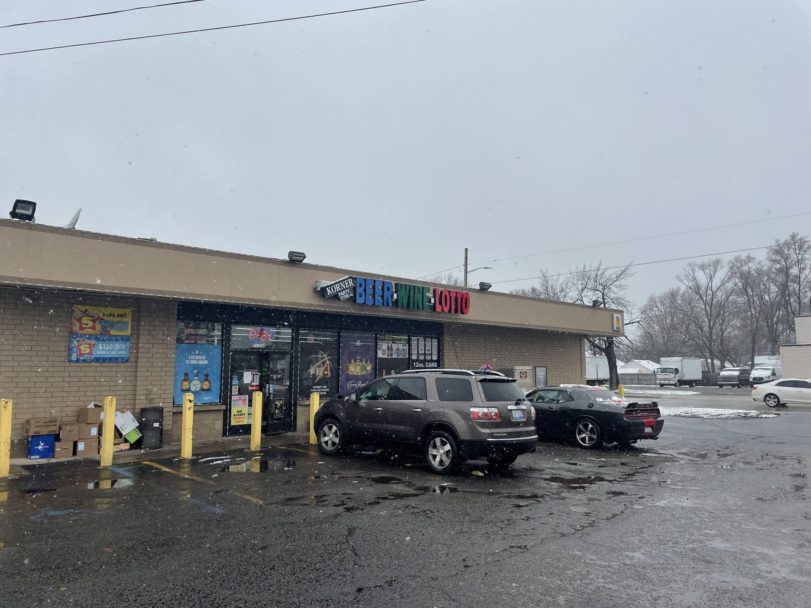

WARREN, Mich. — While the growing expansion of casinos and state-sanctioned sports betting steal the spotlight, state lotteries have nearly doubled in size over the past two decades, driving a multibillion-dollar wealth transfer from low-income U.S. communities to powerful multinational companies.
A nationwide investigation of state lotteries by the Howard Center for Investigative Journalism at the University of Maryland found that stores that sell tickets are disproportionately clustered in lower-income communities in nearly every state. The investigation’s analysis of cellphone location data shows that the people who patronize those lottery retailers come from the same kinds of communities.
Once rare, lotteries now operate in all but five U.S. states. Driven by more than a half-billion dollars in annual ad spending, increasingly sophisticated sales strategies and political pressure to increase revenue, lottery ticket sales have grown from $47 billion to $82 billion since 2005. In 10 states, lotteries generate more revenue than corporate income taxes.
The investigation also found that a key promise of lotteries across the country — that they support education — doesn’t hold up. Instead, lotteries often compound inequities by disproportionately benefiting college students and wealthier school districts far from the neighborhoods that fund ticket sales.
- Gregory W. Sullivan, former Massachusetts inspector general and now research director for the Pioneer Institute, a free-market think tank.
The multibillion-dollar wealth transfer starts in places like Warren, Michigan, where Ashley Standifer buys tickets in one of the state’s poorest neighborhoods.
On a snowy day in April, Standifer stopped by the Korner Party Store in this Detroit suburb, its largest sign advertising “Beer Wine Lotto,” to buy scratch-off tickets.
She buys scratch tickets three times daily, alternating between the Korner Party Store and a cluster of nearby gas stations and convenience stores. She said she won $1,000 on a $3 ticket four years ago, but she hasn’t won big since.
“Of course, you know, I’m expecting to get my money back,” Standifer said. “But if I don’t, it’s just fine. I’m still gonna buy it.”
Standifer’s spending is one small part of the $82 billion now spent annually by lottery players, the first input in a nearly nationwide system that brings state-sponsored gambling directly into a majority of U.S. neighborhoods through more than 200,000 retail stores.
One factor that experts say helps explain the economic and racial disparities driving lottery play is the overconcentration of lottery retailers in lower-income, nonwhite communities.
The convenience store where Standifer bought her scratch-off tickets is in a neighborhood that has a poverty rate almost three times the state average and a Black population 25 percentage points higher than the state average. There are four lottery retailers in this largely residential neighborhood, and another 28 in bordering neighborhoods.
Players like Standifer fund the system by losing a total of $29 billion annually.
But there are consistent winners: the multinational companies that run the lotteries on behalf of the states, the stores that sell tickets — including large convenience-store chains, such as 7-Eleven and Circle K — advertising and media companies, and state administrators who oversee the process.
Another $5 billion, funded by Standifer and other players, will go to retail stores that get a commission for selling tickets and cashing in winning tickets. They earn, on average, 6%, but also earn substantial bonuses when a customer wins a huge prize.
Convenience stores — including convenience stores located at gas stations — account for nearly two-thirds of all lottery sales. While the profit margin on lottery ticket sales lags well behind cigarettes, alcohol and food, lottery tickets are an important tool in drawing customers into the store.
After prizes are paid out and the costs of running the lottery are paid for, $21 billion of the original $82 billion remains for spending on government programs. These funds, according to states, justify the existence of the lottery.
Lotteries fund all sorts of programs in different states — economic development, pension systems, horse racing and tax relief.